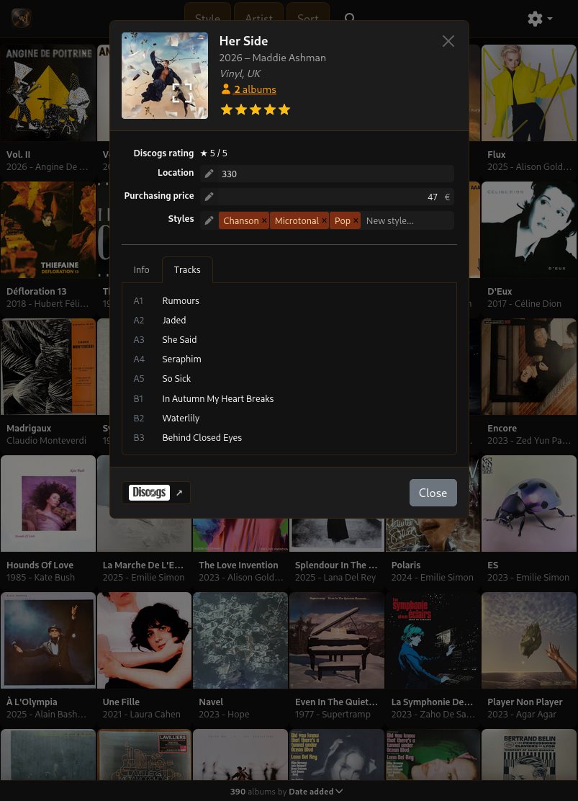
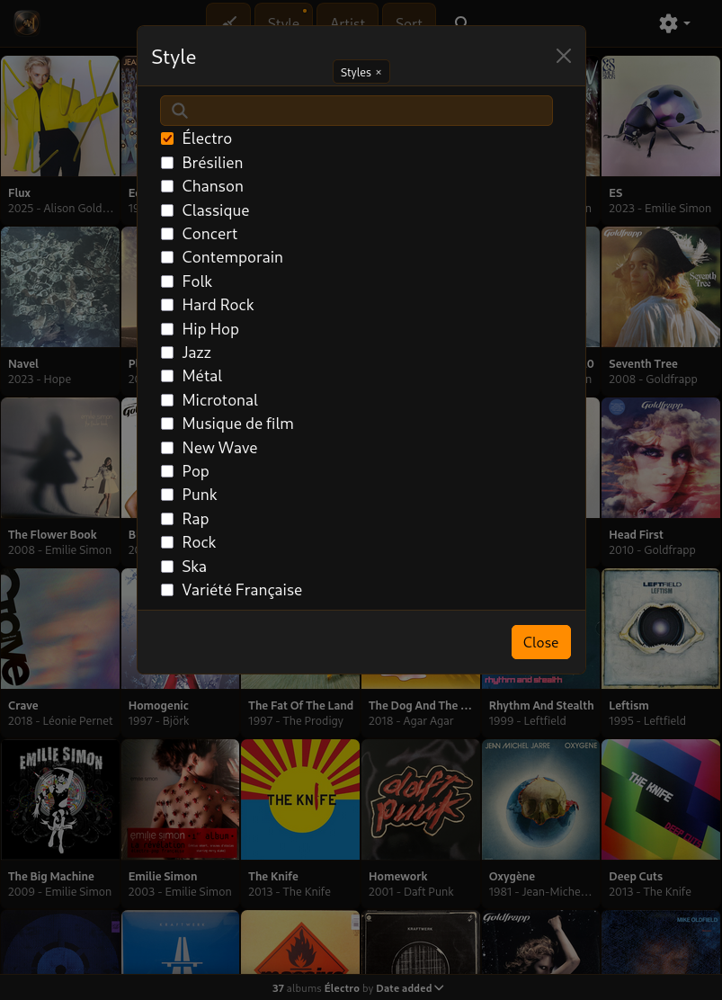
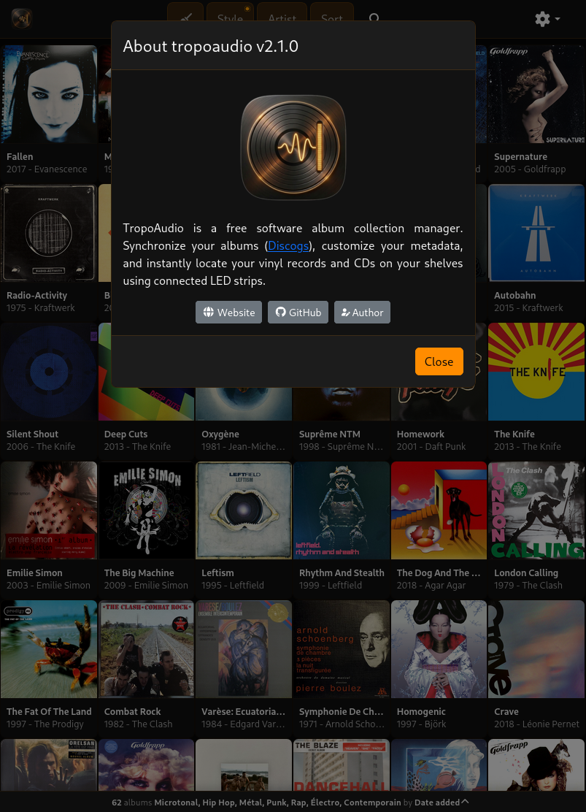
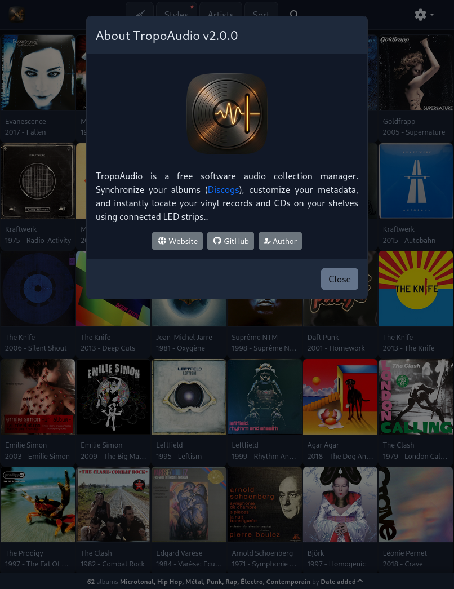

Recherche & Tri instantanés
Filtrez et triez votre collection en temps réel par artiste, année, date d'ajout, note ou emplacement physique sur votre étagère.
TropoAudio est un gestionnaire de collection d'albums sous licence libre. Synchronisez vos albums depuis Discogs, enrichissez-les de métadonnées personnalisées et localisez vos disques sur vos étagères grâce à des rubans LED connectés.

Un gestionnaire réactif et modulaire adapté aux grandes collections de vinyles et de CDs.
Filtrez et triez votre collection en temps réel par artiste, année, date d'ajout, note ou emplacement physique sur votre étagère.
Enrichissez chaque album de champs personnalisés : emplacement exact, prix d'achat et styles simplifiés.
Sélectionnez un album, des styles ou des artistes à l'écran, et les emplacements s'illuminent sur votre étagère grâce à des rubans LED.
Architecture avec proxy sécurisé (Apache/Nginx). Vos jetons d'API et identifiants ne sont jamais exposés côté navigateur.
Monorepo NPM clair séparant composants d'interface, gestion d'état, cache, pilotes matériels, et plugins de données.
Exportez et restaurez des sauvegardes complètes avec métadonnées et pochettes sous forme d'archives ZIP portables.
Une interface réactive, élégante et tactile pour garder votre collection physique à portée de main.
Navigation par pochettes avec accès direct à la synchronisation, sauvegarde et thèmes.

Numéro d'étagère, prix d'achat, styles personnalisés et liste des pistes.

Filtrage en temps réel par styles, artistes, formats et notes.

Mapping des champs Discogs (emplacement, prix, styles) et options LED.

Informations de version, liens vers le code source et la licence libre.
Laissez TropoAudio piloter les rubans LED de vos étagères !
Simulation de la localisation par LED
Membre de l'écosystème TropoAtlas — des composants modulaires organisés en paquets NPM et plugins de données indépendants.
Application cliente principale pour explorer votre collection d'albums.
Gestion d'état avec Zustand, mise en cache et normalisation.
Composants d'interface réutilisables.
Client HTTP pour la communication avec le contrôleur LED.
Plugin d'intégration avec l'API Discogs.
Lancez TropoAudio en local ou avec Docker, et déployez-le derrière un reverse proxy Apache/Nginx.